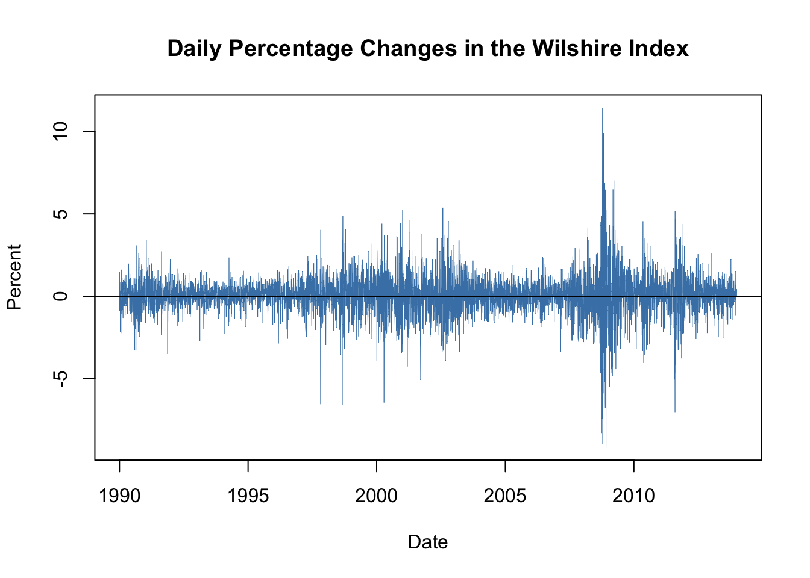

2.4 Volatility Clustering and Autoregressive Conditional Heteroskedasticity
Financial time series often exhibit a behavior that is known as volatility clustering: the volatility changes over time and its degree shows a tendency to persist i.e. there are periods of low volatility and periods where volatility is high. Econometricians call this autoregressive conditional heteroskedasticity. Conditional heteroskedasticity is an interesting property because it can be exploited for forecasting the variance of future periods.
As an example, we consider daily changes in the Whilshire 5000 stock index. The data is available for download at the Federal Reserve Economic Data Base. For consistency with the book we download data from 1989-29-12 to 2013-12-31 (choosing this somewhat larger time span is necessary since later on we will be working with daily changes of the series).
The following code chunk shows how to format the data and how to reproduce Figure 16.3 of the book.
# import data on the Wilshire 5000 index
W5000 <- read.csv2("data/Wilshire5000.csv",
stringsAsFactors = F,
header = T,
sep = ",",
na.strings = ".")
# transform the columns
W5000$DATE <- as.Date(W5000$DATE)
W5000$WILL5000INDFC <- as.numeric(W5000$WILL5000INDFC)
# remove NAs
W5000 <- na.omit(W5000)
# compute daily percentage changes
W5000_PC <- data.frame("Date" = W5000$DATE,
"Value" = as.numeric(Delt(W5000$WILL5000INDFC)*100))
W5000_PC <- na.omit(W5000_PC)# plot percentage changes
plot(W5000_PC,
ylab = "Percent",
main = "Daily Percentage Changes in the Wilshire Index",
type="l",
col = "steelblue",
lwd = 0.5)
# add horizontal line at y = 0
abline(0, 0)
The series of daily percentage changes in the Wilshire index seems to randomly fluctuate around zero, meaning there is little autocorrelation so that it is difficult to predict future outcomes using, e.g., an AR model. However, there is visual evidence that the series exhibits conditional heteroskedasticity since we observe volatility clustering. For some applications it is useful to measure and forecast these patterns. This can be done using models which assume that the volatility can be described by an autoregressive process.
ARCH and GARCH Models
Consider \[Y_t = \beta_0 + \beta_1 Y_{t-1} + \gamma_1 X_{t-1} + u_t,\] an ADL(\(1\),\(1\)) regression model. The econometrician Robert Engle (1982) proposed to model \(\sigma^2_t\), the variance of the error \(u_t\), by an order \(p\) distributed lag model, \[\begin{align} \sigma^2_t = \alpha_0 + \alpha_1 u_{t-1}^2 + \alpha_2 u_{t-2}^2 + \dots + \alpha_p u_{t-p}^2, \tag{2.1} \end{align}\]called the autoregressive conditional heteroskedasticity (ARCH) model of order \(p\), or short ARCH(\(p\)).4 The general idea is apparent from the model structure: positive coefficients \(\alpha_0,\alpha_1,\dots,\alpha_p\) imply that recent large squared errors lead to a large variance, and thus large squared errors, in the current period.
The generalized ARCH (GARCH) model, developed by Tim Bollerslev (1986), is an extension of the ARCH model, where \(\sigma^2_t\) is allowed to depend on its own lags and lags of the squared error term. The GARCH(\(p\),\(q\)) model is given by \[\begin{align} \sigma^2_t = \alpha_0 + \alpha_1 u_{t-1}^2 + \alpha_2 u_{t-2}^2 + \dots + \alpha_p u_{t-p}^2 + \phi_1 \sigma^2_{t-1} + \dots + \phi_p \sigma^2_{t-q}. \tag{2.2} \end{align}\]The GARCH model is an ADL(\(p\),\(q\)) model and thus can provide more parsimonious parameterizations than the ARCH model (see the discussion in Appendix 15.2 of the book).
Application to Stock Price Volatility
Maximum likelihood estimates of ARCH and GARCH models are efficient and have normal distributions in large samples, such that the usual methods for conducting inference about the unknown parameters can be applied. The R package fGarch is a collection of functions for analyzing and modelling the heteroskedastic behavior in time series models. The following application reproduces the results presented in Chapter 16.5 of the book by means of the function garchFit(). This function is somewhat sophisticated. It allows for different specifications of the optimization procedure, different error distributions and much more (use ?GarchFit for a detailed description of the arguments). In particular, the reported standard errors reported by garchFit() are robust.
where \(R_t\) is the percentage change in period \(t\). \(\beta_1\), \(\alpha_0\), \(\alpha_1\) and \(\phi_1\) are unknown coefficients and \(u_t\) and \(\nu_t\) are error terms with conditional mean zero. We do not include any lagged predictors in the equation of \(R_t\) because the daily changes in the Wilshire 5000 index reflect daily stock returns which are essentially unpredictable. Note that \(u_t\) is assumed to be normally distributed and the variance \(\sigma^2_t\) depends on \(t\) as it follows the GARCH(\(1\),\(1\)) recursion (2.3).
It is straightforward to estimate this model using garchFit().
# estimate GARCH(1,1) model of daily percentage changes
GARCH_Wilshire <- garchFit(data = W5000_PC$Value, trace = F)so the coefficients on \(u_{t-1}^2\) and \(\sigma^2_{t-1}\) are statistically significant at any common level of significance. One can show that the persistence of movements in \(\sigma^2_t\) is determined by the sum of both coefficients, which is \(0.99\) here. This indicates that movements in the conditional variance are highly persistent, implying long-lasting periods of high volatility which is consistent with the visual evidence for volatility clustering presented above.
The estimated conditional variance \(\widehat{\sigma}^2_t\) can be computed by plugging the residuals from (2.4) into equation (2.5). This is performed automatically by garchFit(), so to obtain the estimated conditional standard deviations \(\widehat{\sigma}_t\) we only have to read out the values from GARCH_Wilshire by appending @sigma.t.
Using the \(\widehat{\sigma}_t\) we plot bands of \(\pm\) one conditional standard deviation along with deviations of the series of daily percentage changes in the Wilshire 5000 index from its mean. The following code chunk reproduces Figure 16.4 of the book.
# compute deviations of the percentage changes from their mean
dev_mean_W5000_PC <- W5000_PC$Value - GARCH_Wilshire@fit$coef[1]
# plot deviation of percentage changes from mean
plot(W5000_PC$Date, dev_mean_W5000_PC,
type = "l",
col = "steelblue",
ylab = "Percent",
xlab = "Date",
main = "Estimated Bands of +- One Conditional Standard Deviation",
lwd = 0.2)
abline(0, 0)
# add GARCH(1,1) confidence bands (one standard deviation) to the plot
lines(W5000_PC$Date,
GARCH_Wilshire@fit$coef[1] + GARCH_Wilshire@sigma.t,
col = "darkred",
lwd = 0.5)
lines(W5000_PC$Date,
GARCH_Wilshire@fit$coef[1] - GARCH_Wilshire@sigma.t,
col = "darkred",
lwd = 0.5)
We see that the bands of the estimated conditional standard deviations track the observed heteroskedasticity in the series of daily changes of the Wilshire 5000 index quite well. This is useful for quantifying the time-varying volatility and the emerging risk for investors holding stocks summarized by the index. Furthermore, this GARCH model may also be used to produce forecast intervals whose widths depend on the volatility of the most recent periods.
References
Engle, R. (1982). Autoregressive conditional heteroscedasticity with estimates of the variance of united kingdom inflation. Econometrica, 50(4), 987–1007.
Bollerslev, T. (1986). Generalized autoregressive conditional heteroskedasticity. Journal of Econometrics, 31(3), 307–327.
Although we introduce the ARCH model as a component in an ADL(\(1\),\(1\)) model, it can be used for modelling the conditional zero-mean error term of any time series model.↩